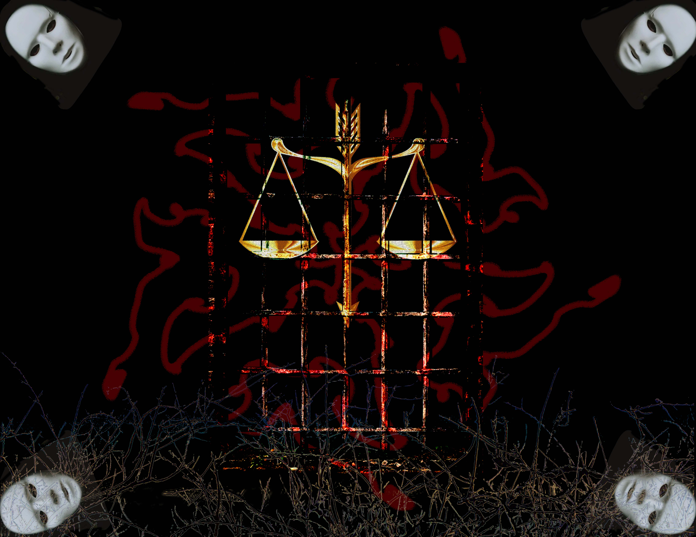

Poster: Prejudice
Software
Photoshop;Illustrator
Inspiration
People who are biased against others just like wearing a mask to see people so that they can’t understand people in the right way. People who sufferring from prejudice may feel unfair and feel as if they are walking in a bush of thorns. There is a door locked the justice. This door need a key to open it. Mutual suspicion can not solve the problem.
